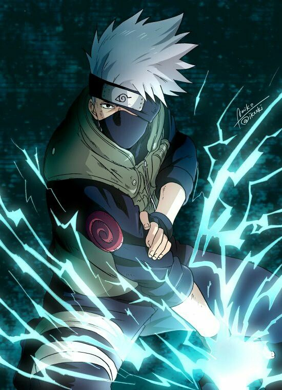

Naruto Uzumaki – The Journey of a Ninja
Naruto Uzumaki

Naruto Uzumaki is the spirited and determined ninja of the Hidden Leaf Village who dreams of becoming Hokage—the strongest ninja and leader of the village. Born as the host of the Nine-Tails fox spirit, he grew up shunned and isolated by those around him, yet he never allowed hatred to take root in his heart. Through hard work, relentless optimism, and a refusal to give up, Naruto transforms from an outcast into one of the most respected shinobi in the world. His loyalty to his friends, especially Sasuke, drives many of his toughest battles and emotional moments. Under the guidance of mentors like Kakashi and Jiraiya, Naruto learns powerful techniques like the Rasengan and Sage Mode, and ultimately gains control over the Nine-Tails within him. He inspires those around him with his unshakable belief that even the most broken people can change for the better. Naruto's journey is one of personal growth, overcoming hardship, and redefining what it means to be a hero. By the end of his story, he not only fulfills his dream, but also becomes a symbol of hope and peace for the entire ninja world.
Sasuke Uchiha

Sasuke Uchiha is a genius from the prestigious Uchiha clan, driven by a deep desire to avenge his family's murder at the hands of his older brother, Itachi. Cool, calm, and reserved, Sasuke becomes Naruto’s rival and teammate on Team 7. Though he initially forms bonds with his teammates, his obsession with power and revenge ultimately leads him to abandon the village and seek strength from darker sources. Sasuke’s journey is marked by pain and isolation, as he walks a path that contrasts sharply with Naruto’s. Despite his cold demeanor, he struggles with internal conflict and the burden of his clan’s legacy. Throughout the series, his choices shape major events in the ninja world, from his defection to his involvement in the Fourth Great Ninja War. In the end, it is his bond with Naruto that forces him to reflect and ultimately change. Sasuke’s story is one of tragedy, redemption, and the long road back from the edge.
Kakashi Hatake
Kakashi Hatake, the Copy Ninja, is a calm, enigmatic shinobi known for his mask, his love of Icha Icha novels, and his infamous tardiness. Despite his laid-back attitude, he’s a brilliant strategist and one of the most skilled ninja in the Hidden Leaf. As the leader of Team 7, Kakashi plays a crucial role in mentoring Naruto, Sasuke, and Sakura, teaching them not only combat skills but also the importance of teamwork and loyalty. Haunted by a tragic past filled with loss, Kakashi hides deep emotional scars beneath his composed exterior. He possesses the Sharingan in one eye, gifted to him by a fallen comrade, which becomes a symbol of both his pain and resolve. Throughout the series, Kakashi’s wisdom and combat prowess make him a vital leader in times of crisis, including the Fourth Great Ninja War. Despite his quiet nature, he earns the respect of allies and enemies alike. Eventually, his strength and dedication lead him to become the Sixth Hokage, fulfilling his own unexpected destiny.